EN · light · 393 px / 100 %

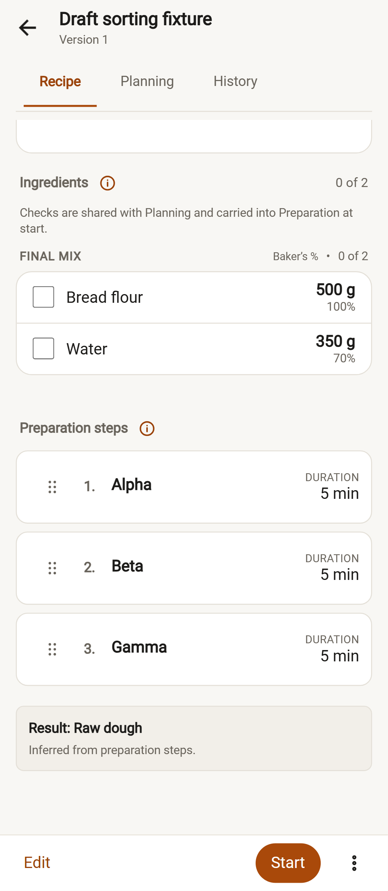

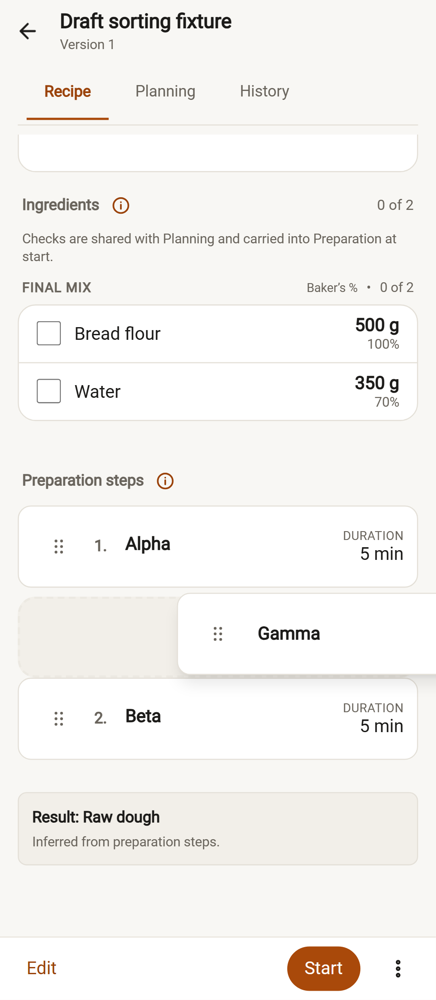
Empty preview: Advanced → Load the sample recipes. On Recipe, hold a step grip for350ms. Keyboard: Space, arrow keys, Space; Escape cancels. Changes remain in the draft until Save.
Captures show the actual production app with a synthetic imported recipe. Source revision: bd6ff9a82a02b038450df63c2a15fe672e4a4246. Tap any image for the full-resolution file. Capture provenance.


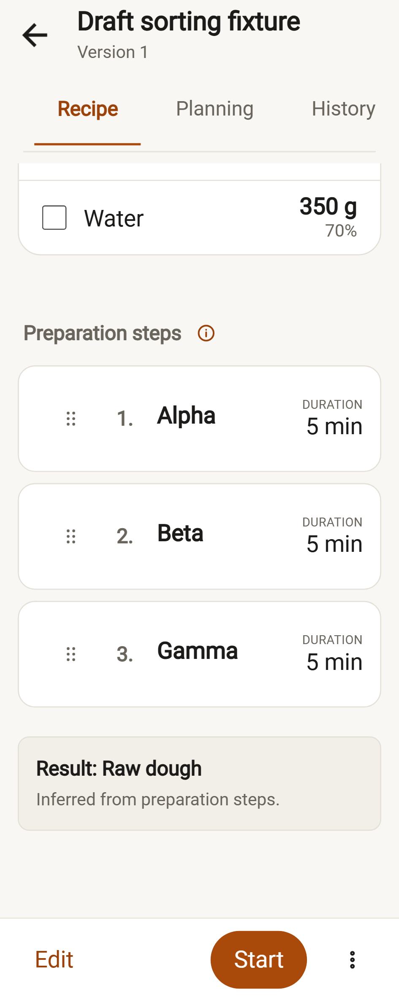
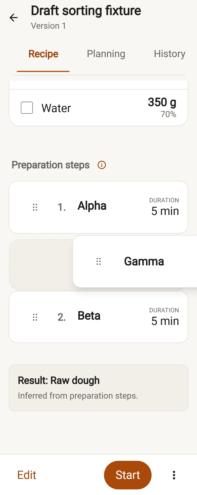
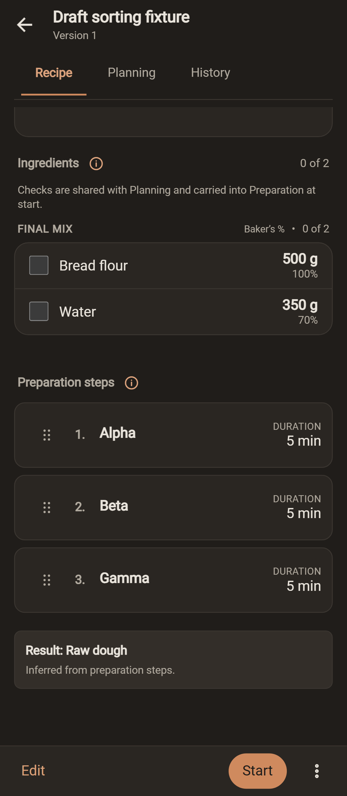
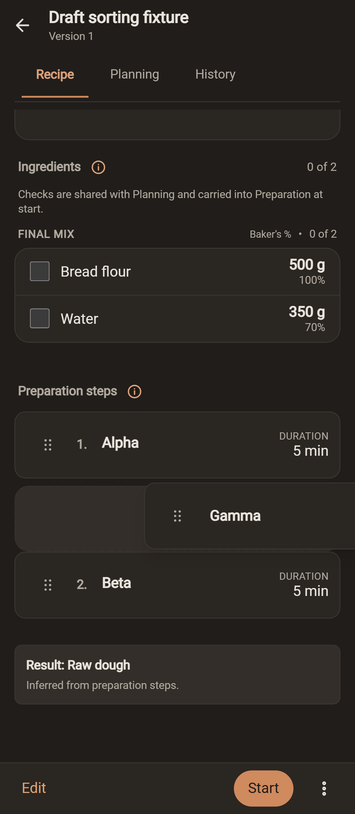
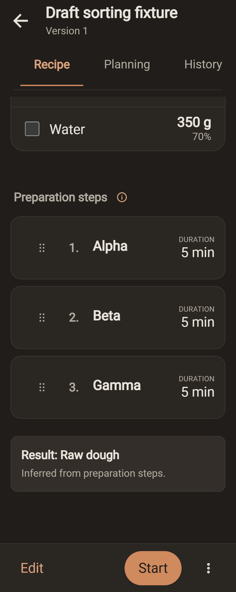
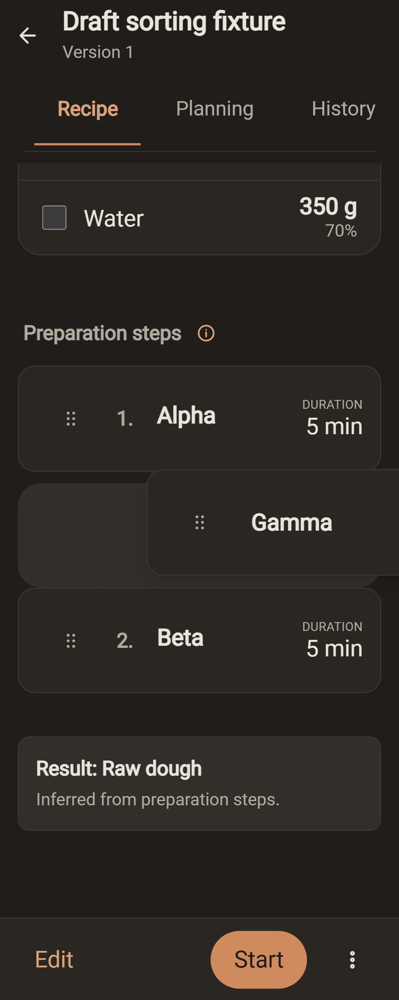
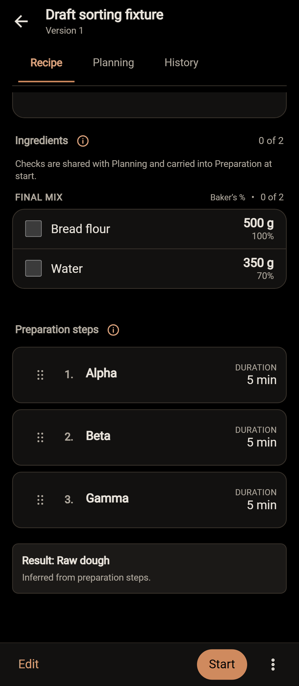
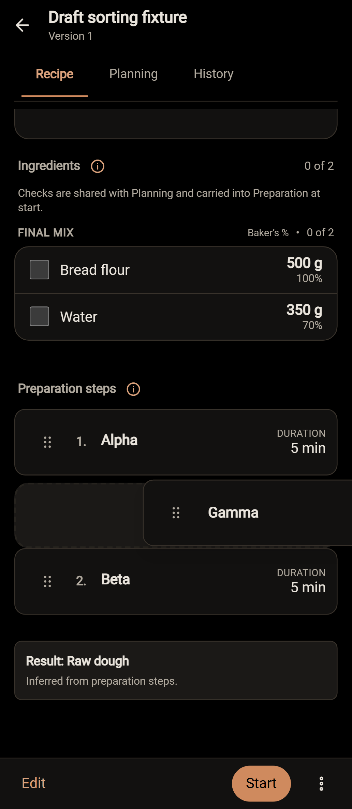
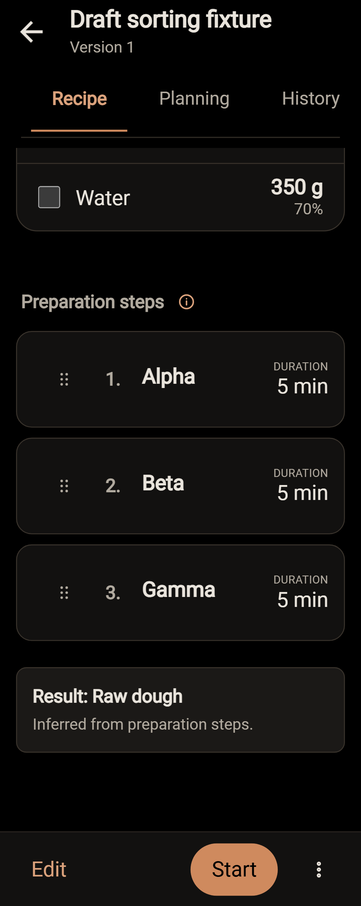
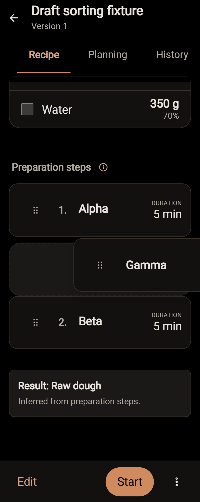
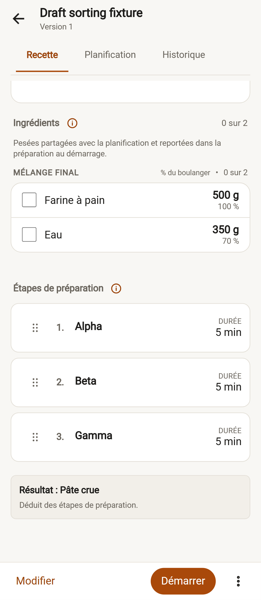
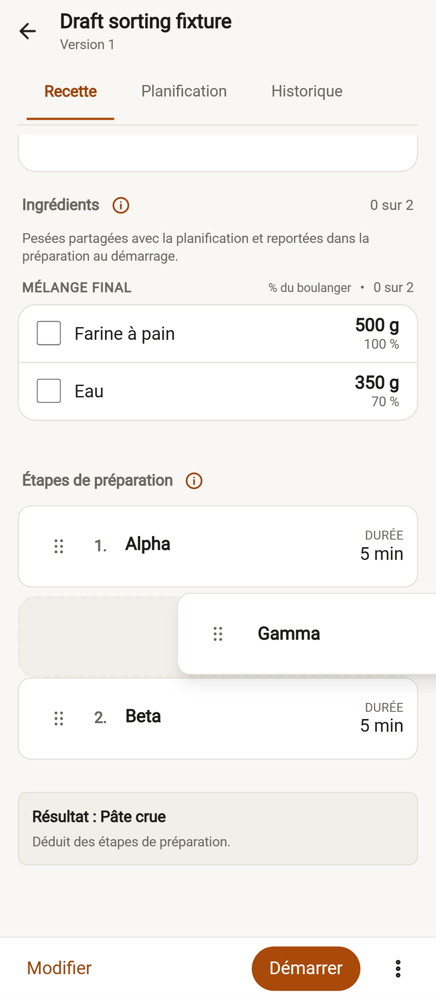
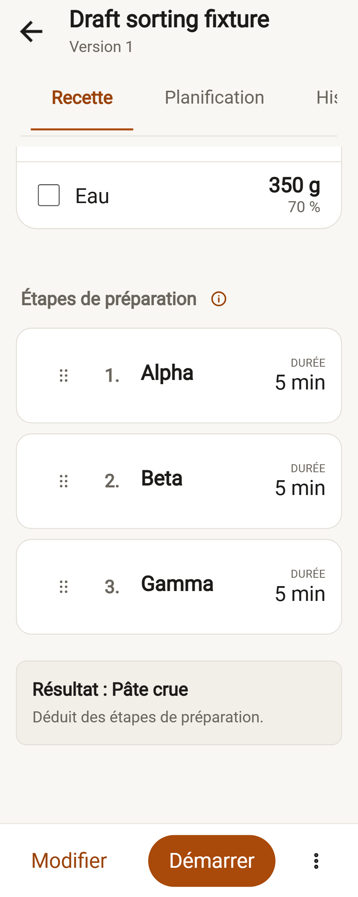
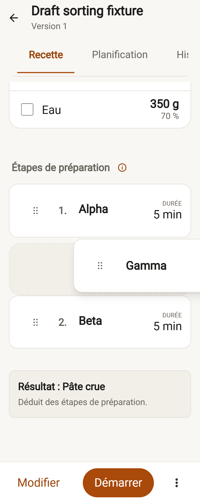
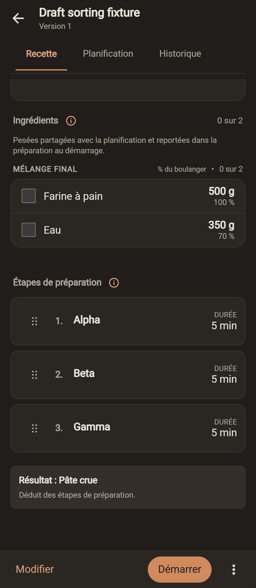
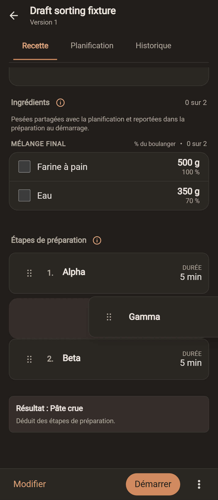
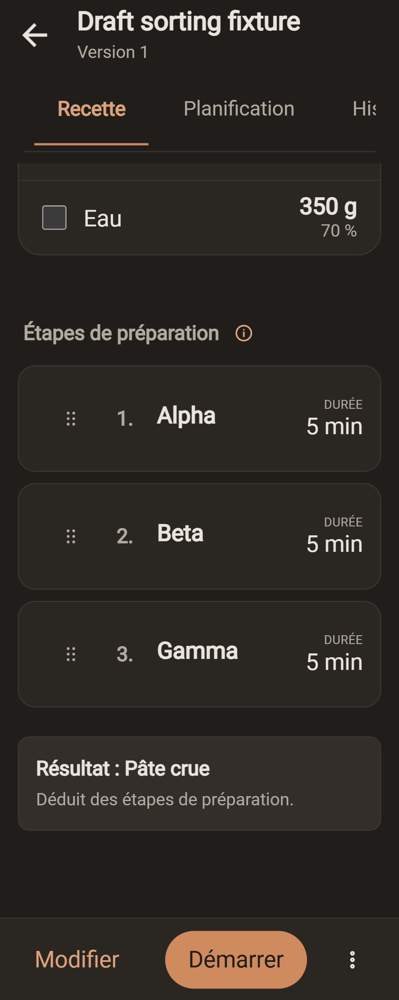
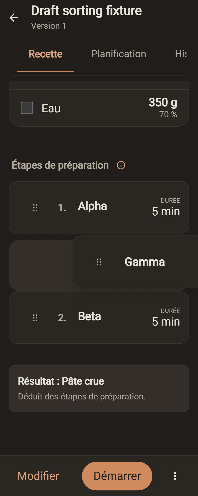
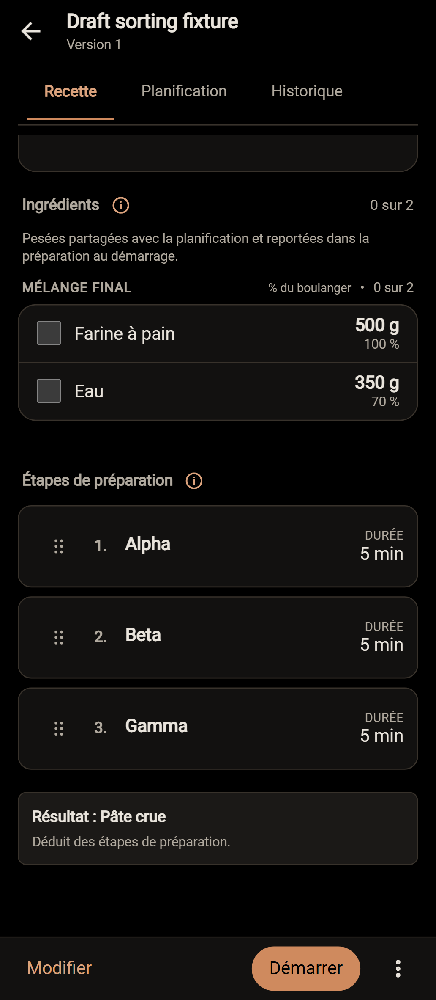
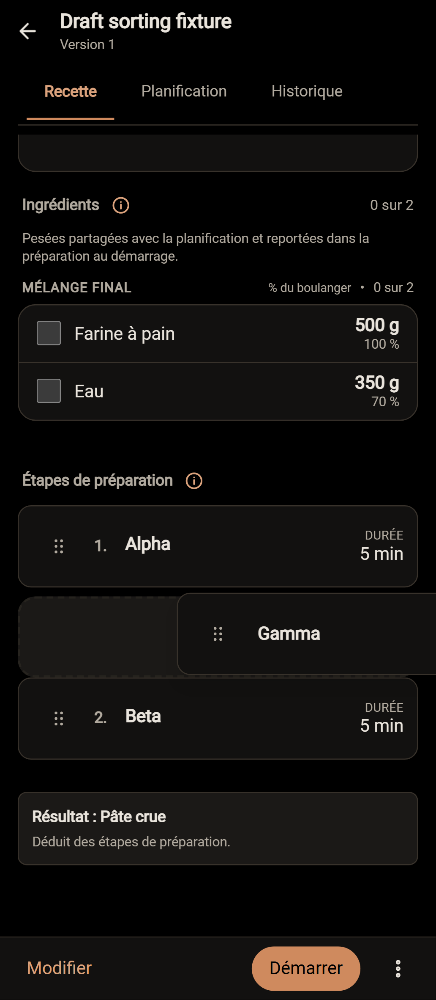
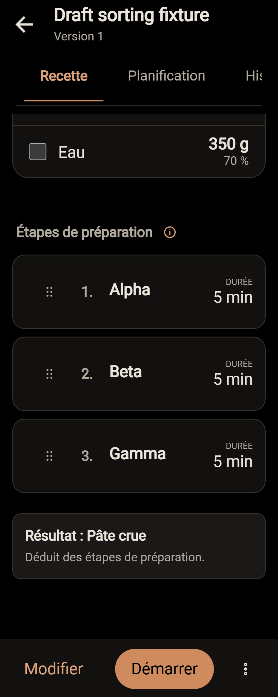
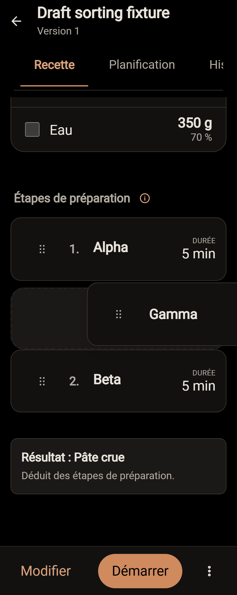